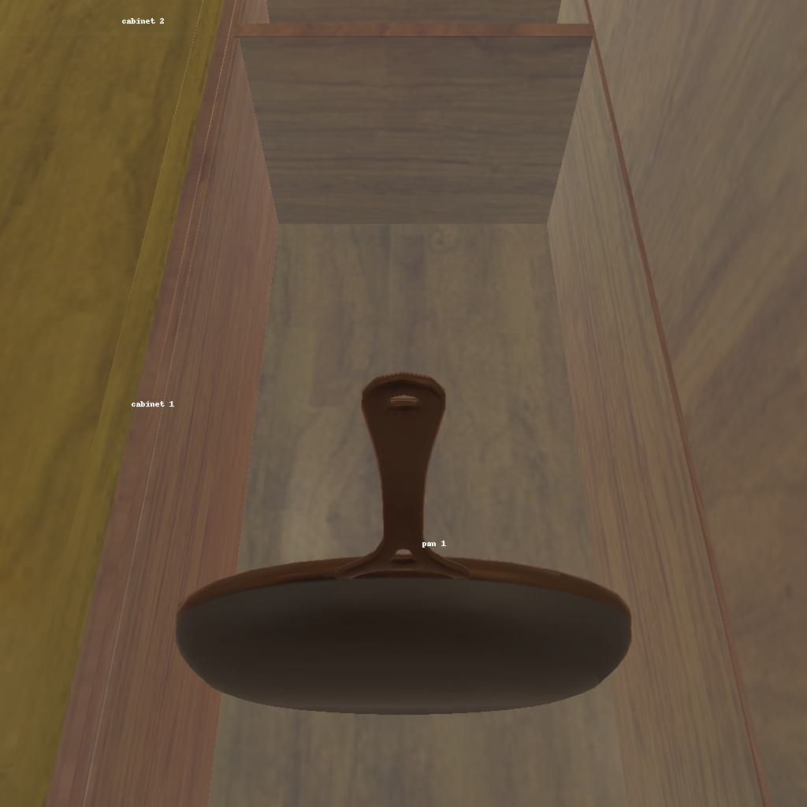

---------------------------------------------------------task: 17---------------------------------------------------------
--------------------------------------------------------------------------------------------------------------------------------------------------------------------
--------------------------------------------------------------------------------------------------------------------------------------------------------------------
Step:--------------------------------------------------------------------------19-------------------------------------------------------------------------------
----------------------------------------
VLM Prompt:
Image1:
Image2:
**Instruction**
1. Analyze the provided image to identify all visible household objects, focusing on those relevant to the task description "cool some pan and put it in stoveburner."
2. Use the analysis of the image and the task hint "The agent must find an object of the desired type, pick it up, go to a fridge, cool the object with the fridge, then find the correct location to place it, and put it down there. The agent does not need to use the fridge button or open the fridge to cool the object, and the agent just needs to do action that is "cool the object with the fridge"." to answer the question: what is the most reasonable action in the choices for the task description "cool some pan and put it in stoveburner"?
4. Decide and write the answer using the template: The answer is: (i): , where i is the real number. If there is no desired object in the image, search every place based on **Initial Observation** to find the object. And if no one is exactly correct, choose a similar answer.
**Initial Observation**
You are in the middle of a room. Looking quickly around you, you can see cabinet (1-14), countertop (1-2), microwave (1), drawer (1-5), sink (1), sinkbasin (1), coffeemachine (1), stoveburner (1-4), toaster (1), fridge (1), diningtable (1), garbagecan (1), safe (1)
**Answer Choices**
(1): go to cabinet 1
(2): go to cabinet 3
(3): go to countertop 1
(4): go to cabinet 4
(5): go to cabinet 5
(6): go to microwave 1
(7): go to cabinet 6
(8): go to drawer 1
(9): go to drawer 2
(10): go to drawer 3
(11): go to cabinet 7
(12): go to cabinet 8
(13): go to sink 1
(14): go to sinkbasin 1
(15): go to coffeemachine 1
(16): go to cabinet 9
(17): go to cabinet 10
(18): go to drawer 4
(19): go to cabinet 11
(20): go to stoveburner 1
(21): go to stoveburner 2
(22): go to stoveburner 3
(23): go to stoveburner 4
(24): go to cabinet 12
(25): go to toaster 1
(26): go to drawer 5
(27): go to countertop 2
(28): go to fridge 1
(29): go to cabinet 13
(30): go to cabinet 14
(31): go to diningtable 1
(32): go to garbagecan 1
(33): go to safe 1
(34): close cabinet 2
(35): put pan 1 in/on cabinet 2
(36): examine pan 1
(37): examine cabinet 2
**Answer**
Let's think step by step by following the instructions.
----------------------------------------
----------------------------------------
Original Response:
The task is to cool some pan and put it in a stoveburner. The image shows a pan labeled "pan 1" and a cabinet labeled "cabinet 1" and "cabinet 2." According to the initial observation, we are in a room with cabinets, countertops, appliances, and a fridge, among other items.
The task hint suggests that we need to find a pan, cool it with the fridge, and then place it on a stoveburner. Since "pan 1" is visible in the image, we do not need to search for it. The next step is to cool the pan with the fridge. However, the answer choices do not include an action to cool the pan with the fridge directly, so we must choose the closest possible action.
The most reasonable action in the choices, considering the task description and the hint provided, would be to first go to the fridge to cool the pan (even though the action is not explicitly stated) and then place it on a stoveburner. Among the given options, going to a stoveburner is the only relevant action after cooling the pan. Since there are four stoveburners and none is specified as being the correct one, we can choose any.
The answer is: (20): go to stoveburner 1.
----------------------------------------
----------------------------------------
>>> Refine Original VLM Response and Get Pure Action: go to stoveburner 1
----------------------------------------
-----------------------------------------------------------------
Running time: 11.144092559814453 seconds
Total Money: 8.414640000000002
-----------------------------------------------------------------
-----------------------------------------------------------------
Text Observation:You arrive at loc 20. On the stoveburner 1, you see a pan 2, a soapbottle 1, a stoveknob 1, and a egg 1.
-----------------------------------------------------------------
UNSUCCEED